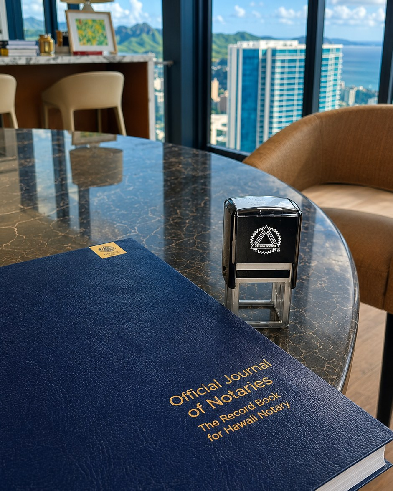

General Notary
Acknowledgments, jurats, affidavits, sworn statements, consent forms, vehicle documents and more.
Professional mobile notarizations and services throughout Oʻahu—at your home, office, hospital, care facility, correctional facility, or another convenient location. Yes, even at da beach.

Install Oahu Notary Services on your phone or computer for quick access without waiting for the browser's install pop-up. The installed version stays connected to the live website, so updated pricing, services and information remain current.
Need something not listed? Send a photo or PDF through our secure document upload and we can tell you whether it is a service we handle.
Acknowledgments, jurats, affidavits, sworn statements, consent forms, vehicle documents and more.
Mobile signing appointments for trusts, powers of attorney, advance health care directives and other attorney-prepared estate documents.
Appointments at hospitals, nursing homes, rehabilitation facilities and care homes throughout Oʻahu.
Deeds, seller packages, buyer packages, refinances, HELOCs and other signing assignments with printing or scan-back options when arranged.
Help coordinating Hawaiʻi apostille and authentication processing, including notarization and document routing when applicable.
Notary appointments requiring institution coordination, security procedures and advance approval.
If a notarization performed by Oahu Notary Services is rejected due to an error on our notarial portion, we will return and correct that notarization at no additional charge.
Standard mobile pricing separates the travel / meeting / appointment-time fee from the notarial fee.
Notarial fee: $5. Hawaiʻi GET: 4.712% added to applicable fees. Additional fees may apply.

Color-coded service areas with ZIP codes. Exact fee is confirmed from the appointment location.
You can send documents through the secure upload link before the appointment. This helps us identify the likely appointment time, printing needs, witness logistics and any special facility requirements.
Text the location, document type and preferred date/time for the fastest response, or use the estimator for a starting number first.